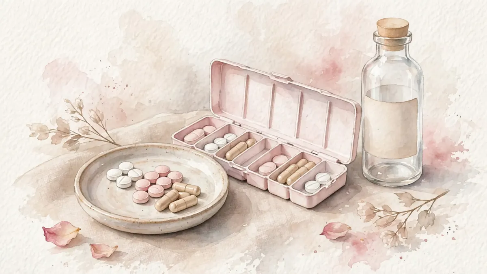

トップ ＞ インナーケア・サプリ ＞ 1日の粒数と飲む回数の組み立て方
1日の粒数と飲む回数の組み立て方

「1日6粒を目安に」と書かれたサプリメントを見て、「6粒をいつ、どう分けて飲むのか」で迷ったことはないでしょうか。表示の粒数は総量の案内ですが、回数の組み立て方は商品によって書き方が異なります。この記事では、粒数と回数の表示の読み方と、自分の生活への組み立て方を整理します。
目安量は「1日の総量」という前提
パッケージの「一日摂取目安量」は、その日に飲む合計の量の案内です。商品によっては「1日2回、1回3粒を目安に」のように回数と1回量まで書かれているものもあれば、「1日6粒を目安に、水などと一緒にお召し上がりください」と総量だけが書かれているものもあります。
回数の指定がある表示は、その分け方が商品の前提です。指定がない場合は、総量を守る範囲で、自分の生活の流れに置く組み立てになります。どちらのタイプかは、目安量の欄の書き方で見分けられます。
分ける場合は、合計が目安量を超えないように
朝と晩に分ける組み立ては、食事の流れに置きやすく、続けやすい方法のひとつです。その場合も、朝の分と晩の分の合計が、表示の目安量を超えないことが前提です。「分けたから多めに」という考え方はしません。
私は施術の現場でも、量の話になると「まず表示の総量を確認する」ことから始めます。回数の組み立ては、その総量の内側で考えるものです。ピルケースを使う場合は、朝の列と晩の列を分けておくと、1日の合計が目で見て管理できます。
数え間違いを防ぐ仕組みを作る
回数が増えるほど起きやすいのが、「今日はもう飲んだかどうか分からなくなる」問題です。これは飲み忘れだけでなく、重ねて飲んでしまう原因にもなります。対策は、曜日の仕切りがあるケースを使う、飲んだらチェック表に印を付ける、ケースを飲み終わったら裏返しておく、といった小さな仕組みです。
飲み忘れに気づいたときも、まとめて多く飲むことはしません。表示の案内や注意書きを確認し、迷う場合は販売者の窓口に聞くのが確実です。粒数と回数は、「総量を確認し、生活に置き、数えられる仕組みにする」という順番で組み立てると、迷いが少なくなります。
粒の大きさで、分け方の感覚も変わる
回数の組み立ては、粒の大きさとも関係します。大きめの粒を一度に何粒も飲むのが負担に感じる場合は、表示の範囲で回数を分ける組み立てが現実的です。逆に、小さな粒は数え間違いが起きやすいため、ケースの仕切りや、あらかじめ1回分を分けておく工夫が役立ちます。
家族が同じ商品を使っている場合は、目安量が人によって同じとは限りません。それぞれの表示を確認し、ケースや置き場所を分けてください。回数の組み立ては、「総量」「生活の流れ」「数えられる仕組み」の3点がそろって、初めて安定します。自分の組み立てを一度紙に書いておくと、家族に説明するときにも役立ちます。
なお、目安量の表示は「1日◯粒まで」と上限のように書かれている場合と、「1日◯粒を目安に」と量の目安として書かれている場合があります。どちらの書き方でも、表示の量を自分で増やす判断はしません。体調や生活が変わったときは、まず表示を読み直すところから始めてください。
回数を分ける場合は、ケースの仕切りだけでなく、置く場所も分けると確実です。朝の分は洗面所、晩の分は食卓、といった具合です。場所と回数が結びつくと、「飲んだかどうか」の記憶が動作で裏づけられます。私は施術でも、道具の定位置を決めることで手順の抜けを防いでいます。サプリメントの回数管理も、同じ考え方で組み立てられます。組み立てに迷ったら、表示に回数の指定があるかどうかを、もう一度確認してください。
セラフィナ「粒数と回数は、生活のリズムに置いて初めて続けられる形になるね」